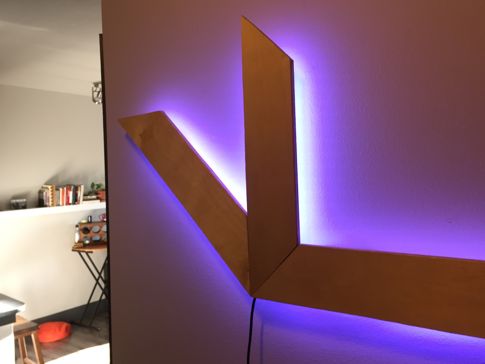
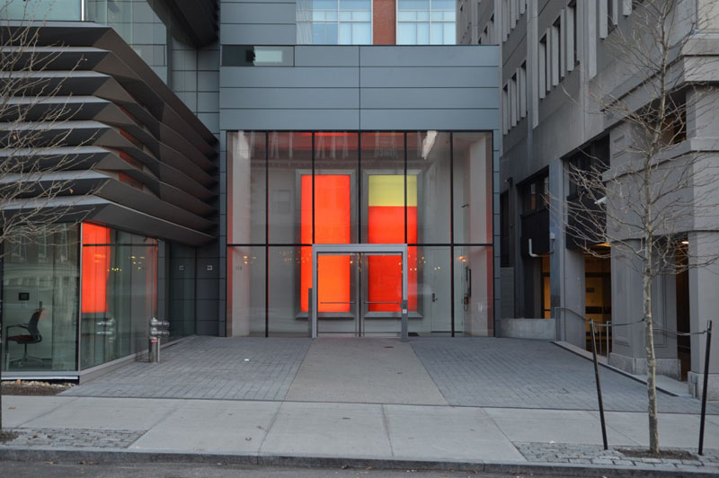
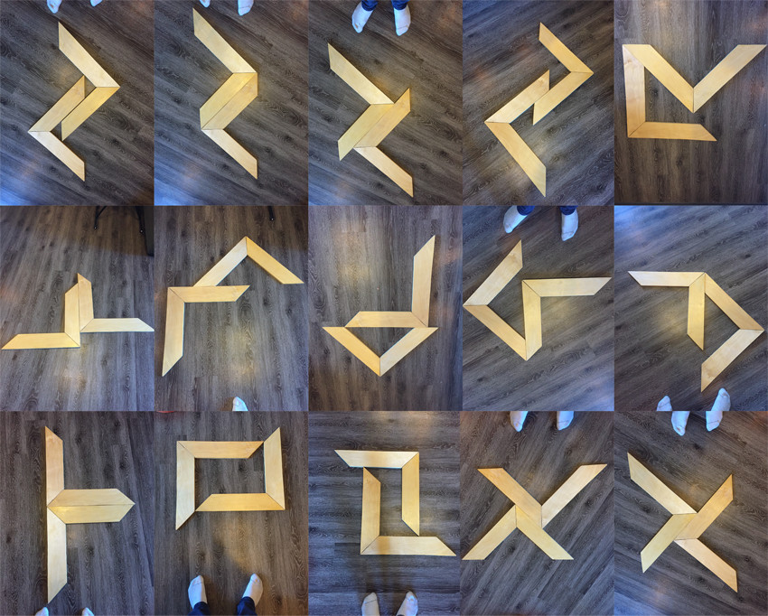
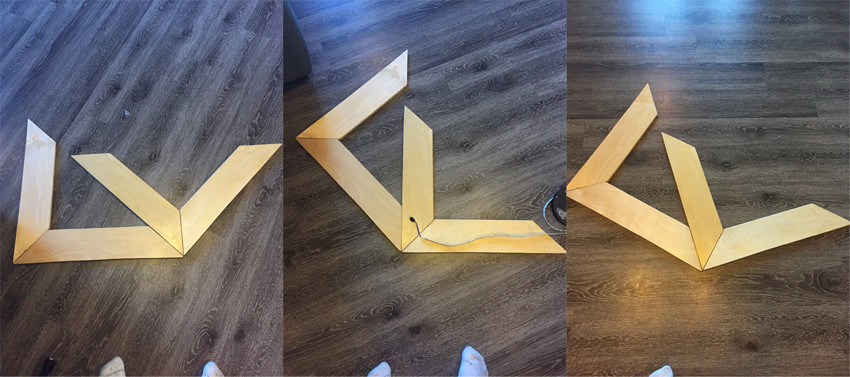

Nilio
Light that changes color very slowly
I created Nilio after being inspired by two other installations.
The first, in Brown's Granoff building, is called "2*5". It was created by the architecture firm Diller Scofidio Renfro. 2*5 changes color and pattern approximately once a day. While I was in college, each day I walked past 2*5 and saw a new combination of colors.
I decided to create a light that would change slightly every day. Just like 2*5, I wanted to be suprised every morning with something which was mostly familar, but a little bit brand new.
My second piece of inspiration for Nieleo was a pot that I built a while ago. The pot fit snuggly into my old office floor at IBM. I built a custom in-floor drainage system for it and planted a Peace Lilly. That pot was awesome. When my team moved out of the old office, I knew I wanted to create something new with the pot's wooden pieces.

I started by expoloring different forms.
The big breakthrough on form came when I realized that three pieces of wood would look more elegant than four. Three piece wooden forms would also be simpler to wire with LEDs. I played around with some rotations of my favorite shape, mentally ignoring the fourth piece of wood:
Then I wrote some arduino code to control the LED lights.
The light would have five possible colors. Each day, one of the colors would be randomly selected, changed slightly, and displayed. This results in a familar yet evolving pattern of lights. Noticable changes to each of the five colors occur over the course of months.
Finally, I assembled the finished product.


My girlfriend thought that the light looked kind of like an Ikea product, so we named it Nilio.
In the future, I would like to integrate Nilio with Alexa and Google Home, so that the light blinks when a timer goes off, displays the weather, and responds to music.